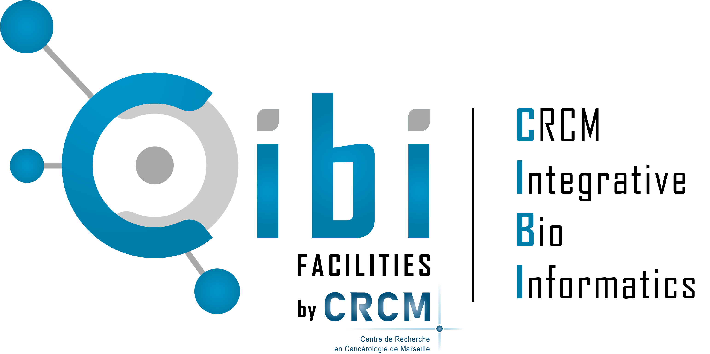
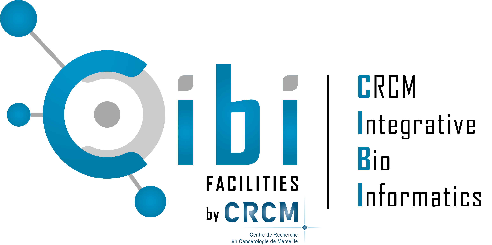

Bioinformatique Module 1 - Traiter ses données NGS (Single cell RNA-seq, RNA-seq bulk et DNA-seq) sous nf-core sur cluster de calcul
Ghislain Bidaut, Plateforme Cibi, CRCM, Aix-Marseille Université
Octobre 2025

1 Formation
Ceci est le site compagnon pour la Formation en Bioinformatique Module 1 - Traiter ses données NGS (Single cell RNA-seq, RNA-seq bulk et DNA-seq) sous nf-core sur cluster de calcul.
Objectif : Savoir mener une analyse bioinformatique sur les séquences issues d’une analyse de séquençage à haut débit (NGS) dans un environnement Linux de type cluster en utilisant la bibliothèque de pipelines NF-Core.
A l’issue de la formation, les participants sauront :
- Etre familier avec la bibliothèque de pipelines NF-Core et le gestionnaire de pipelines Nextflow, ainsi que les principes de leur installation et configuration sur un cluster de calcul.
- Exécuter un pipeline standard NF-Core sur un environnement SLURM, en explorant les étapes et les résultats produits.
- Configurer et personnaliser des pipelines NF-Core à l’aide de paramètres avancés, en intégrant des solutions de conteneurisation (Docker/Singularity).
- Mettre en œuvre des cas pratiques d’analyse de données NGS avec
NF-Core sur SLURM, notamment :
- Identifier des variants génétiques (SNPs, indels) à partir de
données DNA-seq avec le pipeline
nf-core/sarek. -Quantifier l’expression génique à partir de données RNA-seq avec le pipelinenf-core/rnaseq. - Analyser l’expression génique à l’échelle de la cellule unique à
partir de données scRNA-seq avec le pipeline
nf-core/scrnaseq.
- Identifier des variants génétiques (SNPs, indels) à partir de
données DNA-seq avec le pipeline
2 Emploi du temps et déroulé de la formation
2.1 Jour 1
2.1.1 Jour 1 Matin
- Introduction à la formation
- Présentation: Introduction à Linux et Slurm
- TD: Environnement de travail de l’IFB
2.1.2 Jour 1 Après-Midi
- TD: Scripts Linux et soummission de jobs Slurm
- Conclusion de la journée et échanges
2.2 Jour 2
2.2.1 Jour 2 Matin
- Présentation: Intro NF-Core
- TD: S’orienter sur le site NF-core et installer des pipelines
2.2.2 Jour 2 Après Midi
- Présentation: Analyse de données RNA-seq BULK & Single_
- TD: Analyse RNA-seq par pipeline
rnaseq - Conclusion de la journée et échanges
2.3 Jour 3
2.3.1 Jour 3 Matin
- TD: Analyse Single-Cell RNA-seq par pipeline
scrnaseq - Présentation: Recherche de variants par analyse DNA-Seq
2.3.2 Jour 3 Après-Midi
- TD: DNA-Seq - Utilisation du pipeline d’appel de variants
sarek - Conclusion de la formation
2.4 Pratique
Mise à disposition de comptes de formation sur le cluster IFB-core de l’Institut Français de bioinformatique (IFB)
Les supports de cours à jour sont disponibles sur ce lien:
2.5 Remerciement
Je remercie les personnes suivantes qui ont joué un rôle essentiel à la mise en place de cette formation:
Mme Chloé MARTIN du Pôle développement RH d’Aix-Marseille Université pour l’organisation de la formation.
L’Institut Français de Bioinformatique (IFB) pour la mise à disposition de comptes utilisateurs et d’espace disque pour cette formation.
Les membres de la plateforme bioinformatique Cibi du Centre de Recherche en Cancérologie de Marseille pour leur expertise précieuse dans la mise en place de cette formation.
 


Cette œuvre est mise à disposition selon les termes de la
Licence
Creative Commons:
Attribution - Pas d’Utilisation Commerciale -
Pas de Modification 4.0 International (CC BY-NC-ND 4.0).